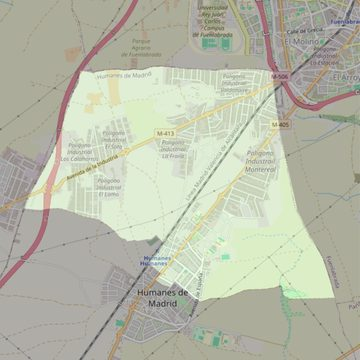

San Pedro Apóstol
- Arciprestazgo
- Griñón
- Población
- Humanes de Madrid
- Dirección postal
- c/ Vicente Aleixandre, 14
- Código postal
- 28970
- Extensión
- 7,68 km² (768 ha)
- Teléfono
- 918 145 074
- Correo electrónico
- sanpedroapostol-humanes@diocesisgetafe.es
- Información demográfica
- De la parroquia · De la población (Humanes de Madrid) · Del arciprestazgo (Griñón)


Descargar mapaLímites según decreto
" Partiendo de la calle del Cementerio, cruzamos la carretera (C/ Madrid) y conectamos con la calle Curro Romero y salimos al camino e las Viñas y camino del Prado de la casa -límites con el término municipal de Parla, Fuenlabrada y Moraleja de En medio- y volvemos al mismo punto de salida". (Decreto de erección de 25-10-95)